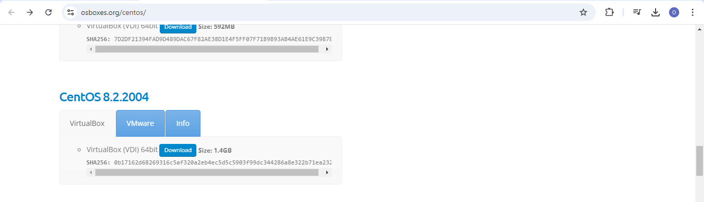
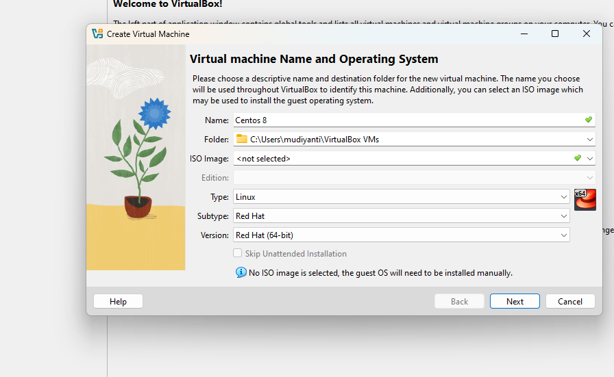
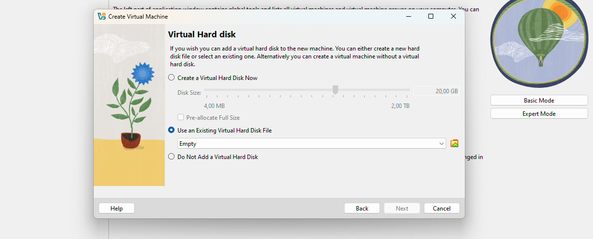
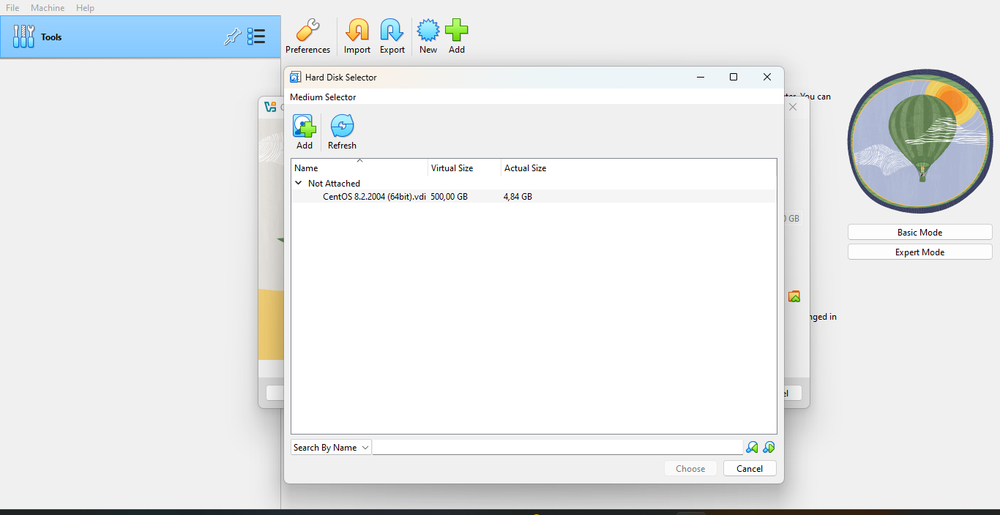
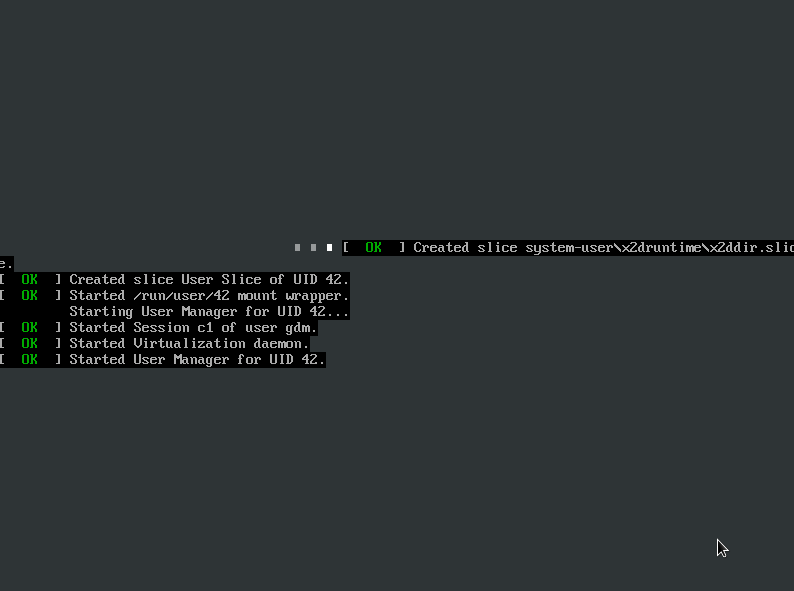
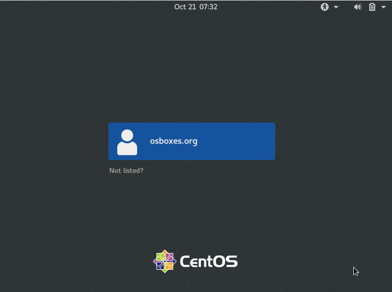
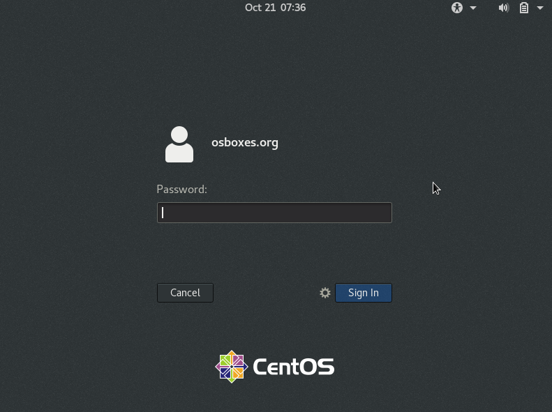
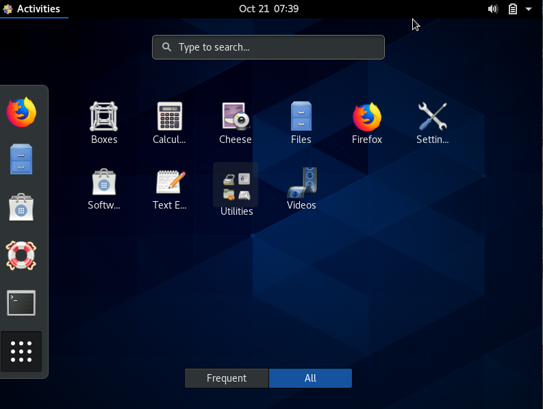

Selamat Datang Di Halaman Instal Aplikasi CentOS
Untuk Menginstal Aplikasi CentOS, Silakan Ikuti Langkah-Langkah Berikut:
- Download file VDI Centos 8.2..2004

- Lalu Membuat Nama Mesin Virtual (CENTOS 8)

- Disini Kita Pilih Usea an Existing Virtual Hardisk File

- Lalu Kita Bisa add File VDI Centos 8.2..2024

- Proses Instalasi

- Tampilan Awal Sebelum Masuk Tampilan ke Deskop


- Tampilan Deskop

Setelah instalasi selesai, Anda dapat menjalankan aplikasi dengan perintah yang sesuai.
Terimah Kasih